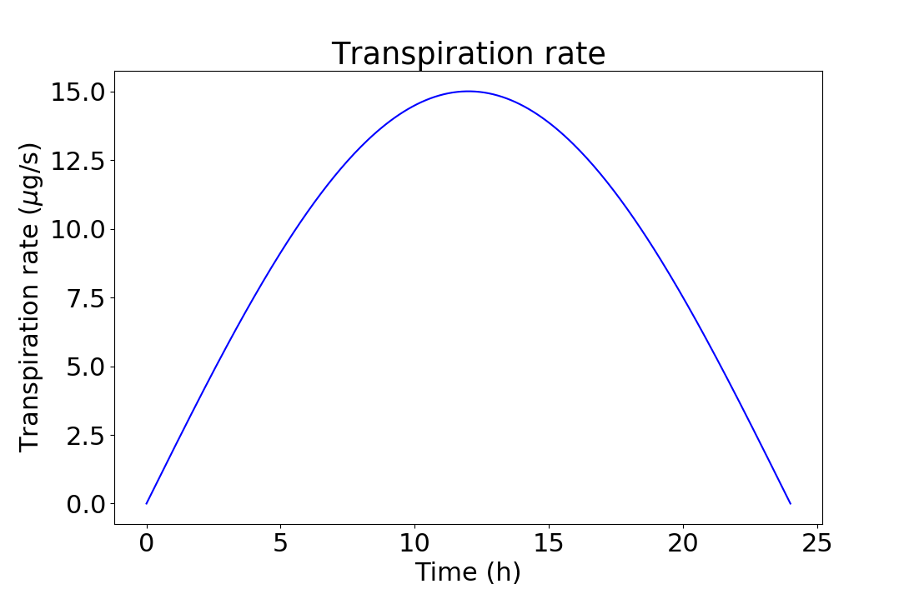

Tree Box Model documentation¶
Details of the model
Installation¶
Download the source¶
>>> git clone git@github.com:LukeEcomod/TreeBoxModel.git
or
download the source https://github.com/LukeEcomod/TreeBoxModel
Install the required packages¶
Ideally you have created a new virtual environment for this project.
To install all the packages required for the model to run use
>>> pip install -r requirements.txt
or
>>> conda install --file requirements.txt
main.py¶
The purpose of this main file is to provide an easy way to run the model.
All the model parameters are set in the file and are taken from Hölttä et. al. 2006 or Nikinmaa et. al., (2014).
A sine-like behaviour is assumed for the transpiration and photosynthesis
{kind=link}
Modules, Classes & functions¶
-
class
src.model.Model(tree: src.tree.Tree, outputfile: str = 'a.nc')¶ Calculates the next time step for given tree and saves the tree stage.
Provides functionality for solving the ordinary differential equations (ODE) describing the behaviour of the modelled system.
- Parameters
tree (Tree) – instance of the tree class for which the ODEs are solved
outputfile (str) – name of the file where the NETCDF4 output is written
-
ncf¶ the output file
- Type
netCDF4.Dataset
-
axial_fluxes() → numpy.ndarray¶ Calculates axial sap mass flux for every element.
The axial flux in the xylem and phloem are calculated independently from the sum of bottom and top fluxes
\[Q_{ax,i} = Q_{ax,bottom,i} + Q_{ax,top,i} - E\]\[ \begin{align}\begin{aligned}Q_{ax,bottom,i} = \frac{k_i \: A_{ax,i} \: \rho_w}{\eta_i \: l_i}(P_{i+1} - P_{i} - P_h)\\Q_{ax,top,i} = \frac{k_i \: A_{ax,i+1} \: \rho_w}{\eta_i \: l_i}(P_{i-1} - P_{i} + P_h)\end{aligned}\end{align} \]where
\(E_i\): transpiration rate of the ith element (\(\frac{kg}{s}\))
\(k_i\): axial permeability of the ith element (\(m^2\))
\(A_{ax,i}\): base surface area of xylem or phloem (\(m^2\))
\(\rho_w\): liquid phase density of water (\(\frac{kg}{m^3}\))
\(\eta\): viscosity of the sap in the ith element (\(Pa \: s\))
\(l_i\): length (height) of the ith element (\(m\))
\(P_{i}\): Pressure in the ith element (\(Pa\))
\(P_h\): Hydrostatic pressure (\(Pa\)) \(P_h = \rho_w a_{gravitation} l_i\)
- Returns
numpy.ndarray (dtype=float, ndim=2)[self.tree.num_elements, 2] – The axial fluxes in units kg/s
-
radial_fluxes() → numpy.ndarray¶ Calculates radial sap mass flux for every element.
The radial flux for the phloem of the ith axial is calculated similar to Hölttä et. al. 2006
\[Q_{radial,phloem} = L_r A_{rad,i}\rho_{w} [P_{i,xylem} - P_{i,phloem} - \sigma(C_{i,xylem} - C_{i,phloem})RT)]\]where
\(L_r\): radial hydraulic conductivity (\(\frac{m}{Pa \: s}\))
\(A_{rad,i}\): lateral surface area of the xylem (\(m^2\))
\(\rho_w\): liquid phase density of water (\(\frac{kg}{m^3}\))
\(P_{i}\): Pressure in the ith element (\(Pa\))
\(\sigma\): Reflection coefficient (Van’t hoff factor) (unitless)
\(C_{i}\): Sucrose concentration in the ith element (\(\frac{mol}{m^3}\))
\(R\): Universal gas constant (\(\frac{J}{K \: mol}\))
\(T\): Ambient temperature (\(K\))
The radial flux for the xylem is equal to the additive inverse of the phloem flux
\[Q_{radial,xylem} = -Q_{radial,phloem}\]- Returns
numpy.ndarray (dtype=float, ndim=2)[self.tree.num_elements, 2] – The radial fluxes in units kg/s
-
run(time_start: float = 0.001, time_end: float = 120.0, dt: float = 0.01, output_interval: float = 60) → None¶ Propagates the tree in time using explicit Euler method (very slow).
NB! This function needs to be updated. Use run_scipy instead!
- Parameters
time_start (float) – Time in seconds where to start the simulation.
time_ned (float) – Time in seconds where to end the simulation.
dt (float) – time step in seconds
output_interval – Time interval in seconds when to save the tree stage
-
run_scipy(time_start: float = 0.001, time_end: float = 120.0, ind: int = 0) → None¶ Propagates the tree in time using the solve_ivp function in the SciPy package.
The stage of the tree is saved only at the start of the simulation if time_start < 1e-3 and at time_end. If the tree stage is desired on multiple time points the function needs to be called recurrently by splitting the time interval into multiple sub intervals.
- Parameters
time_start (float) – Time in seconds where to start the simulation.
time_ned (float) – Time in seconds where to end the simulation.
ind (int) – index which refers to the index in model.outputfile. The last stage of the tree is saved to model.outputfile[ind].
-
class
src.tree.Tree(height: float, initial_radius: List[float], num_elements: int, transpiration_profile: List[float], photosynthesis_profile: List[float], sugar_profile: List[float], sugar_loading_profile: List[float], sugar_unloading_profile: List[float], sugar_target_concentration: float, sugar_unloading_slope: float, axial_permeability_profile: List[List[float]], radial_hydraulic_conductivity_profile: List[float], elastic_modulus_profile: List[List[float]], ground_water_potential: float)¶ Model of a tree.
Provides properties and functionality for saving and editing the modelled tree. Arguments whose type is List[float] or List[List[float]] are converted to numpy.ndarray with numpy.asarray method. Thus, also numpy.ndarray is a valid type for these arguments.
For arguemnts whose type is List[float] (except for initial_radius) the length of the arguments must be equal to num_elements. The order of the list should be from the top of the tree (the first item) to the bottom of the tree (the last item)
For arguments whose type is List[List[float]] the length of the arguemnts must be equal to num_elements and each sub list must contain two elements, one for the xylem and one for the phloem in this order. The order of the sub lists should be from the top of the tree (the first sub list) to the bottom of the tree (the last sub list).
- Parameters
height (float) – total tree height (\(m\))
initial_radius (List[float] or numpy.ndarray) –
the radius of the xylem and the phloem (\(m\)) in this order. See from the modelled system, how the radii should be given. Only two values can be given and the radius of each element is set to be the same in the tree initialization.
num_elements (int) – number of vertical elemenets in the tree. The height of an element is determined by \(\text{element height} = \frac{\text{tree height}}{\text{number of elements}}\)
transpiration_profile (List[float] or numpy.ndarray) – The rate of transpiration (\(\frac{kg}{s}\)) in the xylem. The length of the list must be equal to num_elements and the order is from the top of the tree (first value) in the list to the bottom of the tree (last value in the list).
photosynthesis_profile (List[float]) – The rate of photosynthesis (\(\frac{mol}{s}\)). Currently this variable is not used and the rate of photosynthesis should be equal to the sugar_loading_profile.
sugar_profile (List[float]] or numpy.ndarray) – The initial sugar (sucrose) concentration in the phloem (\(\frac{mol}{m^3}\))
sugar_loading_profile (List[List[float]] or numpy.ndarray) – the rate at which sugar concentration increases in each phloem element (\(\frac{mol}{s}\))
sugar_unloading_profile (List[float] or numpy.ndarray) – The initial sugar unloading rate (the rate at which the sugar concentration decreases in a given phloem element) (\(\frac{mol}{s}\)). The unloading rate is updated in src.odefun.odefun.
sugar_target_concentration (float) – the target concentration after which the sugar unloading starts (\(\frac{mol}{m^3}\))
sugar_unloading_slope (float) –
the slope parameter for unloading (see Nikinmaa et. al., (2014)).
axial_permeability_profile (List[List[float]] or numpy.ndarray) – axial permeabilities of both xylem and phloem (\(m^2\))
radial_hydraulic_conductivity_profile (List[float]] or numpy.ndarray) – radial hydraulic conductivity between the xylem and the phloem (\(\frac{m}{Pa \: s}\))
elastic_modulus_profile (List[List[float]] or numpy.ndarray) – Elastic modulus of every element (\(Pa\)).
ground_water_potential (float) – The water potential in the soil. This is used to calculate the sap flux between soil and the bottom xylem element.
-
height¶ total tree height (\(m\))
- Type
float
-
num_elements¶ number of vertical elemenets in the tree.
- Type
float
-
transpiration_rate¶ The rate of transpiration (\(\frac{kg}{s}\)) in the xylem.
- Type
numpy.ndarray(dtype=float, ndim=2) [tree.num_elements, 1]
-
photosynthesis_rate¶ The rate of photosynthesis (\(\frac{mol}{s}\)). Currently this variable is not used.
- Type
numpy.ndarray(dtype=float, ndim=2) [tree.num_elements, 1]
-
sugar_loading_rate¶ The rate at which sugar concentration increases in each phloem element (\(\frac{mol}{s}\)).
- Type
numpy.ndarray(dtype=float, ndim=2) [tree.num_elements, 1]
-
sugar_unloading_rate¶ The rate at which the sugar concentration decreases in a given phloem element (\(\frac{mol}{s}\)).
- Type
numpy.ndarray(dtype=float, ndim=2) [tree.num_elements, 1]
-
sugar_target_concentration¶ The target concentration after which the sugar unloading starts (\(\frac{mol}{m^3}\)).
- Type
float
-
sugar_unloading_slope¶ The slope parameter for unloading (see [Nikinmaa et. al., (2014)](https://academic.oup.com/aob/article/114/4/653/2769025)).
- Type
float
-
solutes¶ Array of src.solute.Solute which contain the solutes in the sap of xylem and phloem.
- Type
numpy.ndarray(dtype=src.solute.Solute, ndim=2) [tree.num_elements, 2]
-
axial_permeability¶ Axial permeabilities of both xylem and phloem (\(m^2\)).
- Type
numpy.ndarray(dtype=float, ndim=2) [tree.num_elements, 2]
-
radial_hydraulic_conductivity¶ Radial hydraulic conductivity between the xylem and the phloem (\(\frac{m}{Pa \: s}\)).
- Type
numpy.ndarray(dtype=float, ndim=2) [tree.num_elements, 1]
-
elastic_modulus¶ Elastic modulus of every element (\(Pa\)).
- Type
numpy.ndarray(dtype=float, ndim=2) [tree.num_elements, 2]
-
ground_water_potential¶ The water potential in the soil.
- Type
float
-
pressure¶ Pressure of each element (\(Pa\))
- Type
numpy.ndarray(dtype=float, ndim=2) [tree.num_elements, 2]
-
element_radius¶ Radius of each element (\(m\))
- Type
numpy.ndarray(dtype=float, ndim=2) [tree.num_elements, 2]
-
element_height¶ Height of each element (\(m\))
- Type
numpy.ndarray(dtype=float, ndim=2) [tree.num_elements, 2]
-
viscosity¶ The dynamic viscosity of each element (\(Pa \: s\))
- Type
numpy.ndarray(dtype=float, ndim=2) [tree.num_elements, 2]
-
cross_sectional_area(ind: List[int] = None) → numpy.ndarray¶ Calculates the cross-sectional area between the xylemn and the phloem.
The cross sectional area is equal to lateral surface area of the xylem.
- Parameters
ind (List[int] or numpy.ndarray(dtype=int, ndim=1), optional) – the indices of the elements for which the cross-sectinoal area is calculated. If no ind is given, the cross-sectional area is calculated for every element.
- Returns
numpy.ndarray(dtype=float, ndim=2) [len(ind) or self.num_elements, 1] – Cross-sectional area between the xylem and phloem elements (\(m^2\))
-
element_area(ind: List[int] = None, column: int = 0) → numpy.ndarray¶ Calculates the base area of the xylem or the phloem.
- Parameters
ind (List[int] or numpy.ndarray(dtype=int, ndim=1), optional) – the indices of the elements for which the base area is calculated. If no ind is given, the base area is calculated for every element.
column (int, optional) – The column in the tree grid for which the base area is calculated. use column=0 for the xylem and column=1 for the phloem. If not column is given returns the base area for the xylem.
- Returns
numpy.ndarray(dtype=float, ndim=2) [len(ind) or self.num_elements, 1] – Base area of either the xylem or the phloem (\(m^2\))
-
element_volume(ind: List[int] = None, column: int = 0) → numpy.ndarray¶ Calculates the volume of the xylem or the phloem.
- Parameters
ind (List[int] or numpy.ndarray(dtype=int, ndim=1), optional) – the indices of the elements for which the volume is calculated. If no ind is given, the volume is calculated for every element.
column (int, optional) – The column in the tree grid for which the volume is calculated. use column=0 for the xylem and column=1 for the phloem. If not column is given returns the volume for the xylem.
- Returns
numpy.ndarray(dtype=float, ndim=2) [len(ind) or self.num_elements, 1] – Volume of either the xylem or the phloem (\(m^3\))
-
sugar_concentration_as_numpy_array() → numpy.ndarray¶ Transforms the phloem sugar concentration in self.solutes into numpy.ndarray.
- Returns
numpy.ndarray(dtype=float, ndim=2) [self.num_elements, 1] – The sugar concentration in the phloem. (\(\frac{mol}{m^3}\))
-
update_sap_viscosity() → None¶ Calculates and sets the viscosity in the phloem according to the sugar concenration.
The sap viscosity is calculated according to Morrison (2002)
\[\eta = \eta_w \exp{\frac{4.68 \cdot 0.956 \Phi_s}{1-0.956 \Phi_s}}\]where
\(\eta_w\): Dynamic viscosity of water (\(\eta_w \approx 0.001\))
\(\Phi_s\): Volume fraction of sugar (sucrose) in the phloem sap.
References
Morison, Ken R. “Viscosity equations for sucrose solutions: old and new 2002.” Proceedings of the 9th APCChE Congress and CHEMECA. 2002.
-
update_sugar_concentration(new_concentration: numpy.ndarray) → None¶ Sets the sugar concentration in self.solutes to new_concentration.
- Parameters
new_concentration (numpy.ndarray(dtype=float, ndim=2)[self.num_elements,1]) – new concentration values. the order is from top of the tree (first element, new_concentration[0]) to bottom of the tree (last element, new_concentration[self.num_elements-1]) (\(\frac{mol}{m^3}\))
-
src.odefun.odefun(t: float, y: numpy.ndarray, model) → numpy.ndarray¶ Calculates the right hand side of the model ODEs.
The modelled systen and the ODEs are described in the modelled system. The scipy.solve_ivp() function in src.model.Model.run_scipy() method calls this function during the simulation.
- Parameters
t (float) – time in the model simulation
y (numpy.ndarray(dtype=float, ndims=1)[5 \(\cdot\) model.tree.num_elements,]) – 1D array where elements 0:2 \(\cdot\) model.tree.num_elements are the pressures in the xylem and phloem of the tree, elements 2 \(\cdot\) model.tree.num_elements:3 \(\cdot\) model.tree.num_elements are for the sucrose concentration in the phloem and elements 3 \(\cdot\) model.tree.num_elements:5 \(\cdot\) model.tree.num_elements are for the element radii both in the xylem and the phloem.
model (src.model.Model) – Instace of the model class
- Returns
(numpy.ndarray(dtype=float,ndims=1)[5 \(\cdot\) model.tree.num_elements,]) – 1D array of the right hand side values of the model ODEs where the elements 0:2 \(\cdot\) model.tree.num_elements are \(\frac{\text{d(pressure)}}{\text{dt}}\), elements 2 \(\cdot\) model.tree.num_elements: 3 \(\cdot\) model.tree.num_elements are \(\frac{\text{d[C(sucrose)]}}{\text{dt}}\) and elements 3 \(\cdot\) model.tree.num_elements:5 \(\cdot\) model.tree.num_elements are \(\frac{\text{d(radius)}}{\text{dt}}\)
-
src.constants.HEARTWOOD_RADIUS= 0.0444¶ The radius of the heartwood \(\left( m \right)\)
-
src.constants.TEMPERATURE: float = 298.0¶ Temperature of the tree \(\left( K \right)\)
-
src.constants.M_WATER: float = 0.0182¶ Molar mass of water \(\left(\frac{kg}{mol}\right)\)
-
src.constants.RHO_WATER: float = 1000¶ density of liquid water \(\left(\frac{kg}{m^3}\right)\)
-
src.constants.VISCOSITY_WATER: float = 0.001¶ dynamic viscosity of water \(\left( Pa \cdot s \right)\)
-
src.constants.M_SUCROSE: float = 0.3423¶ molar mass of sucrose \(\left(\frac{kg}{mol}\right)\)
-
src.constants.RHO_SUCROSE: float = 1590.0¶ density of sucrose \(\left(\frac{kg}{m^3}\right)\)
-
src.constants.GRAVITATIONAL_ACCELERATION: float = 9.81¶ acceleration due to Earth’s gravity \(\left(\frac{m}{s^2}\right)\)
-
src.constants.AVOGADROS_CONSTANT: float = 6.022e+23¶ avogadro’s constant \(\left(\frac{1}{mol}\right)\)
-
src.constants.MOLAR_GAS_CONSTANT: float = 8.3145¶ molar gas constant \(\left(\frac{J}{K \cdot mol}\right)\)
-
src.model_variables= Name, descriptions, unit, dimension and precision of each variable that is saved to the netcdf dataset¶
-
src.tools.iotools.initialize_netcdf(filename: str, axial_elements: int, variables: Dict) → netCDF4._netCDF4.Dataset¶ Initializes a netcdf file to be ready for saving simulation results.
- Parameters
filename (str) – name of the NETCDF4 file that is created
axial_elements (int) – Number of axial elements in the Tree
variables (Dict) – The names, descriptions, units, dimensions and precision of each variable that is saved to the netcdf file. The key of each dictionary element is used to label the variables. The value of each dictionary element needs to be a list where
list[0] (str) Description of the variable
list[1] (str): unit of the variable
list[2] (Tuple): NETCDF dimensions of the variable
list[3] (str): Datatype (precision) of the variable
The possible NETCDF dimensions are “index”, “radial_layers” and “axial_layers”.
- Returns
(NETCDF4.Dataset) – A NETCDF4 file where the simulation results can be saved.
-
src.tools.iotools.tree_properties_to_dict(tree: src.tree.Tree) → Dict¶ Transfers tree properties into a dictionary.
- Parameters
tree (Tree) – Instance of the tree class.
- Returns
(Dict) – Dictionary of the tree properties.
-
src.tools.iotools.write_netcdf(ncf: netCDF4._netCDF4.Dataset, results: Dict) → None¶ Write a simulation result dictionary into a netcdf file.
The variables that can be written are defined in the src.model_variables file
- Parameters
ncf (netCDF4.Dataset) – the netcdf file where the results are written
results (Dict) – the results dictionary. Use the tree_properties_to_dict function to create the dictionary.
-
src.tools.plotting.plot_phloem_pressure_top_bottom(filename: str) → None¶ Plot the phloem pressure at the top and bottom of the tree.
The figure is saved in the current working directory with the same name as the filename with “_phloem_pressure.png” appended.
- Parameters
filename (str) – name of the NetCDF file in the current directory that includes the simulation results.
-
src.tools.plotting.plot_simulation_results(filename: str, foldername: str) → None¶ Plot sugar concentration, fluxes and pressures from one simulation.
Currently you need edit tha start and end indeces in the code to capture the correct time window in the simulation results. The indices refer to the index dimension in the NetCDF files.
- Parameters
filename (str) – name of the NetCDF file in the current directory that includes the simulation results.
foldername (str) – name of the folder where the figures are saved
-
src.tools.plotting.plot_variable_vs_time(filename: str, params: Dict = None) → None¶ Plot any variable as a function of time from the NetCDF file that contains the simulation results.
- Parameters
filename (str) – name of the NetCDF file in the current directory that includes the simulation results.
params (Dict, optional) – Parameters and instructions for making the plot (see Examples)
Examples
An example of the params dictionary is
params = {'variable_name': 'pressure', 'time_divide': 86400, 'variable_divide': 1e6 'labels': [['top'], ['bottom'], ['middle']], 'line_colors': [['k'], ['r'], ['b']], 'line_widths': [[3], [3], [3]], 'cut': {'index': range(1500), 'axial_layers': [0, 39], 'radial_layers': [1]}, 'xticks': np.linspace(0, 10, 11), 'xlabel': 'Time (d)' 'ylabel': 'Pressure (MPa)', 'title': 'Pressure in the xylem' 'folder', 'figure/', 'filename_ending': 'xylem_pressure.png'}
Variable name is the name of the variable that is to be plotted. The name must equal to a variable in the NetCDF file
time_divide is a float which is used to divide the time vector (x-axis) in the plot. e.g., 86400 converts seconds to days
variable_divide is a float which is used to divide the variable vector (y-axis) in the plot
labels are the labels of each line that is drawn
line_colors are the colors of each line that is drawn
line_widths are the line widths of each line that is drawn
cut contains the data range in the NetCDF file that are plotted. The function can handle only 3-dimensional data. If the variable that is plotted has shape (1500,2,1) like in this example, the function expects that there will be 2*1=3 lines in the plot. Consequently, the labels, line_colors, and line_widhths values in the params dictionary need to have 3 elements like in this example.
xticks are the matplotlib.pyplot.xticks function argument
xlabel is the matplotlib.pyplot.xlabel function argument
ylabel is the matplotlib.pyplot.ylabel function argument
title is the matplotlib.pyplot.title function argument
folder refers to the folder starting from the current working directory where the figure is saved
filename_ending is a string that is appended to the filename when the figure is saved
If no folder is specified the argument filename and filename_ending is used to create the name of the figure that is saved.
-
src.tools.plotting.plot_xylem_pressure_top_bottom(filename: str) → None¶ Plot the xylem pressure at the top and bottom of the tree.
The figure is saved in the current working directory with the same name as the filename with “_xylem_pressure.png” appended.
- Parameters
filename (str) – name of the NetCDF file in the current directory that includes the simulation results.